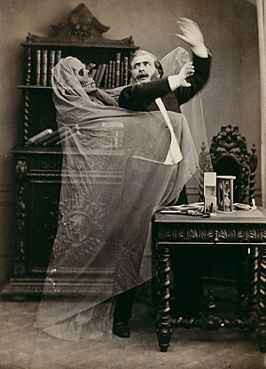

Friday, October the 30th, 2009
back to: title, date or indexes

Picture courtesy of The Victorian Era
When ghouls attack, there are certain precautions the sensible householder can take to avoid permanent disarrangement of the senses. Ghouls will oft times take you into their chill embrace and drip ghastly ectoplasm from their extremities. This can be such a disgusting experience that your nerves will be bedizened before you even have time to shout “Allahu Akbar!” or some similar appeal to a deity. Not that calling upon any god, not even some of the Aztec ones, will do you much good with a ghoul on the attack. By and large, ghouls are godless, and have no concept of spiritual fervour or fear. Being semi-transparent and insubstantial, they are also, regrettably, impervious to being beaten with shovels or fire-tongs. How, then, can you defend yourself and your loved ones against their malign implacability?
Here are some tips from a pamphlet recently issued by the government's newly-appointed Ghoul Czar:
A flamboyant ping pong technique unnerves most ghouls. Practise relentlessly, even on the Day of Rest.
Ghouls hate syrup. Keep plenty of tins in your pantry.
A lopsided cake-stand artfully placed on the dresser will throw a ghoul into a quandary.
If you have a pond, keep a pet swan.
Recital of Sylvia Plath poems can send ghouls back to the netherworld from which they emerged. But never, ever whisper a word from the works of Ted Hughes in their presence.
Slack-jawed farmhands can be positioned between you and a ghoul to stave it off.
If you are staying in a ghoul-haunted guest-house, insist on having a trapdoor in your room.
Spray the air with essence of toffee apple.
Ornate stippled eider duck decor baffles the keenest ghoul.
An unctuous demeanour will behove you well.
Bear in mind that there is no known defence against the Brechtian ghoul.
Like racehorses, ghouls can be nobbled. This prevents any mischief in the first place.